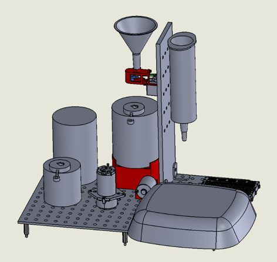
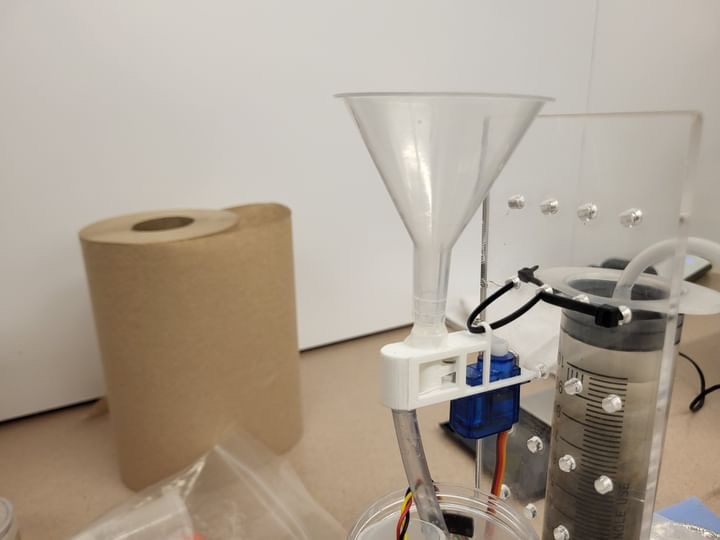
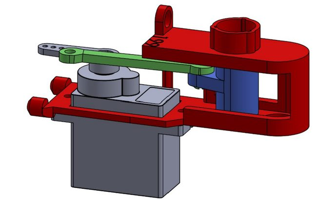
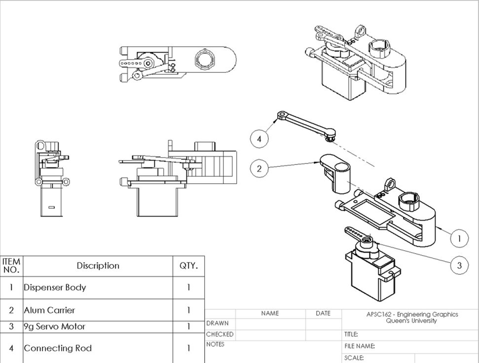

Scale Water Treatment System

Designed and fabricated a functional automated water treatment system. This project required managing strict material constraints alongside complex team dynamics.
Project Overview
The project was split into three separate systems. My responsibility was designing a dispensing assembly to accurately and reliably dispense 9g of aluminum sulfate into a mixing tank, under a tight material allowance of 75g of 3D-printer filament for the whole system.
Dispensing Assembly
The dispenser was optimized for 3D printability and minimal material usage. Its performance and design efficiency led to it being adopted as the standard example for future classes.
Technical Documentation
Produced standardized manufacturing drawings for the dispensing assembly.
Team Leadership
Slow progress and unbalanced team contributions revealed a challenging group dynamic. Took leadership to ensure the success of the mechanical designs and most of the reporting, guaranteeing a functional prototype.
Gallery



